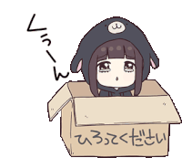

Story 2
2018 - 2020
It was a few years ago when I found myself reconnecting with an old friend—a girl I hadn’t thought much about since kindergarten. Back then, we were just classmates, sharing crayons and snack times, too young to know or care about anything deeper. But one day, my mom casually mentioned something that caught me off guard: we were cousins.
I was stunned. How could I not have known? I asked her to explain, and she gave me a simple answer: “Your grandma and her grandma are cousins.” It wasn’t a close connection, but it was there—a thread of family I had never realized existed.
As we talked more, it felt good to have someone to share small pieces of life with. It wasn’t anything grand, but it was enough. Then came 2022, and everything changed. She got a boyfriend.
I didn’t think much of it at first—why would I? But it didn’t take long for his jealousy to surface. For reasons I still don’t understand, he didn’t like me. Maybe it was the way we laughed, or the simple fact that we talked at all. She never explained, but I started to feel the tension, even from a distance.
Eventually, it came to a head. He told her to stop speaking to me. Completely. Permanently. And she listened.
I remember how quiet things got after that. Our conversations stopped, the connection we had slowly dissolved, and I found myself alone again. It stung, of course, but not as much as I expected.
Looking back, I can’t bring myself to blame her. Life pulls people in different directions, and sometimes those directions don’t include you. Maybe she remembers me now and then, just as I remember her.
Heh, funny how life works. I didn’t mind the loneliness then, and I guess I don’t mind it now.